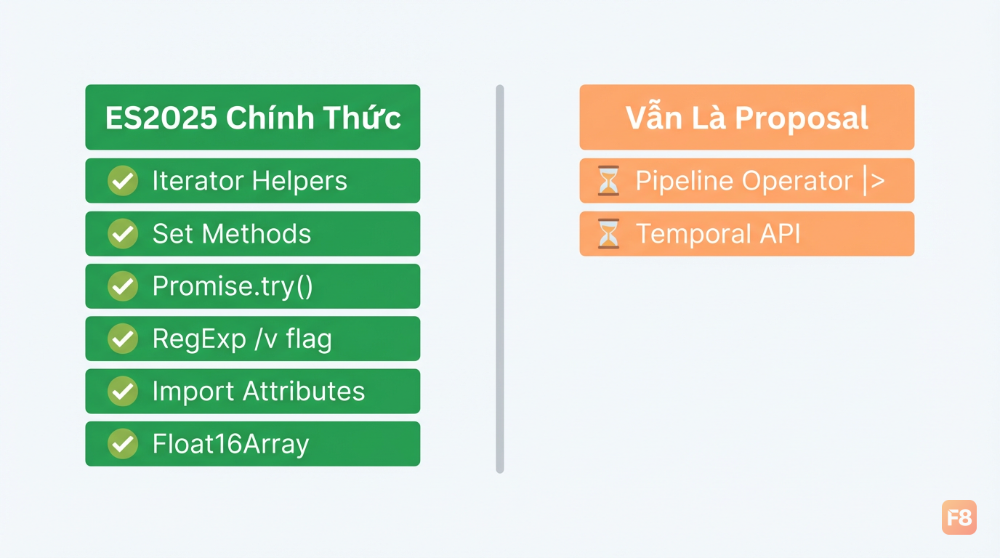
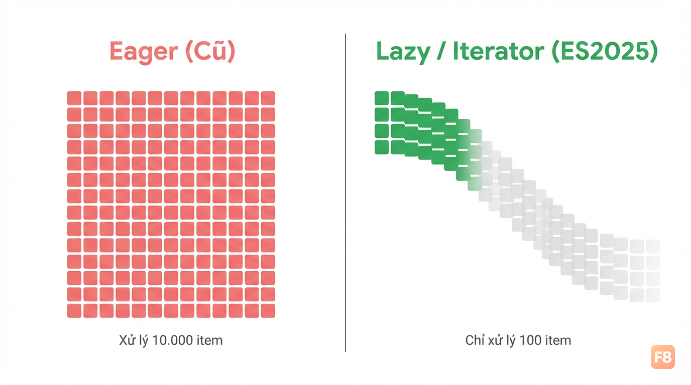
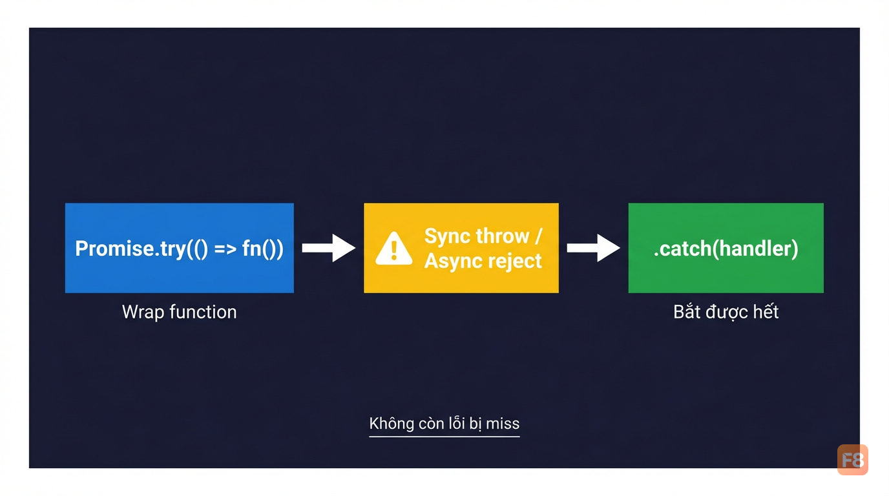
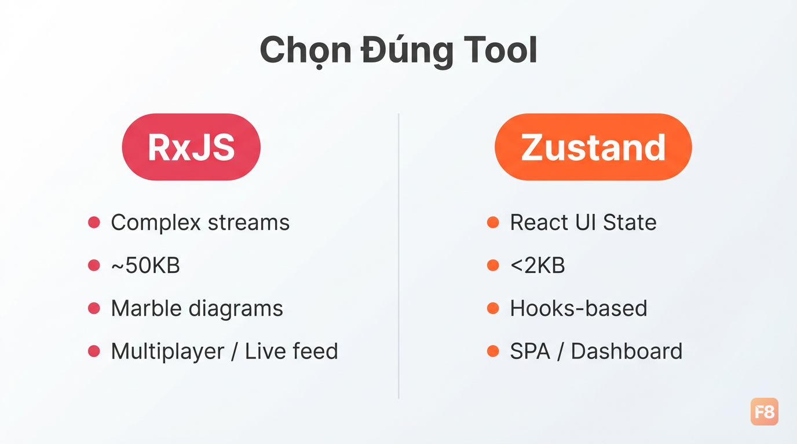

ES2025 JavaScript: Patterns và Libraries Hot Nhất Cho Developer Việt 2026

ES2025 ra mắt - cái gì thật sự vào spec?
Tháng 6/2025, TC39 chính thức công bố ECMAScript 2025 (ES16). Nếu bạn hay follow Twitter/X dev community, chắc nghe nhiều về pipeline operator hay Temporal API - nhưng cả hai vẫn chưa vào spec. Đừng để bị nhầm.
Cái thật sự vào ES2025 gồm 6 nhóm tính năng:
-
Iterator Helpers
- global
Iteratorobject vớimap,filter,take,drop -
Set Methods
-
union(),intersection(),difference(),symmetricDifference() - Promise.try() - bắt cả sync lẫn async errors trong một chain
-
RegExp improvements
- flag
/v,RegExp.escape(), duplicate named groups -
Import Attributes
-
import data from "./data.json" with { type: "json" } - Float16Array - typed array 16-bit cho memory-sensitive workloads

Node.js 22+ và các browser Chrome/Firefox/Safari release sau tháng 6/2025 đã support native. Không cần polyfill cho production nếu bạn target môi trường đủ mới.
Pipeline operator và Temporal API? Vẫn đang ở Stage 2-3. Dùng Luxon hoặc date-fns cho date/time là lựa chọn thực tế nhất hiện tại.
Iterator Helpers và Set Methods - dùng thật trong dự án thế nào?
Hai tính năng này mình thấy practical nhất trong ES2025 cho daily work.
Iterator Helpers
giải quyết bài toán bạn từng phải import lodash chỉ để
map + filter + slice
một mảng lớn. Bây giờ không cần nữa:
// Trước ES2015 - load cả mảng vào memory
const result = apiData
.filter(item => item.active)
.map(item => item.name)
.slice(0, 100);
//ES2025 - lazy evaluation, chỉ xử lý đến khi đủ 100 item
const result = Iterator.from(apiData)
.filter(item => item.active)
.map(item => item.name)
.take(100)
.toArray();
Khác biệt quan trọng
Iterator.from()
lazy
- với mảng 10.000 item nhưng chỉ cần 100 kết quả đầu, nó không
xử lý 9.900 item còn lại. Lodash chain cũng làm được điều này,
nhưng giờ là native.

Set methods thì đặc biệt hữu ích cho permission systems hoặc dedup realtime data
const userRoles = new Set(['admin', 'editor']);
requiredRoles = new Set(['editor', 'viewer']);
// Kiểm tra overlap
const hasAccess = !userRoles.intersection(requiredRoles).size === 0;
// Chat app: merge messages từ 2 nguồn, không trùng
const allMessages = socketMessages.union(cachedMessages);
// Diff để biết message mới
const newMessages = socketMessages.difference(cachedMessages);
Trước đây bạn phải tự viết
[...setA].filter(x => setB.has(x)). Dài, khó đọc,
dễ bug. Set methods native clean hơn nhiều và chain được với
nhau.
Promise.try() và async/await patterns nâng cao
Đây là tính năng mình mong nhất trong ES2025. Vấn đề cũ:
// Bug tiềm ẩn: nếu getUser() throw sync, lỗi không bị catch!
async function loadProfile(id) {
return getUser(id) // sync function, throw không bị catch bởi .catch()
.then(user => fetchDetails(user));
}
Promise.try()fix đúng điểm này:
// Promise.try wrap cả sync throw vào promise chain
Promise.try(() => getUser(id))
.then(user => fetchDetails(user))
.catch(err => handleError(err)); // bắt được cả sync lẫn async error
Pattern mạnh hơn: kết hợp với async generators cho streaming data
async function* streamDashboardData(endpoint) {
const response = await Promise.try(() => fetch(endpoint));
const reader = response.body.getReader();
while (true) {
const { done, value } = await reader.read();
if (done) break;
// Dùng Iterator Helpers để transform ngay trên stream
yield* Iterator.from([value])
.map(chunk => JSON.parse(new TextDecoder().decode(chunk)))
.filter(data => data.type === 'update');
}
}
// Consume trong component
for await (const update of streamDashboardData('/api/stream')) {
updateUI(update);
}

Top-level await (ES2022 nhưng hay dùng chung với ES2025 patterns) cũng clean hơn khi kết hợp Set ops:
// module.js - init một lần, share across module
const initialPermissions = new Set(await fetchUserPermissions());
const const cachedPermissions = new Set(JSON.parse(localStorage.getItem('perms') ?? '[]'));
// Merge, loại bỏ duplicate
export const permissions = initialPermissions.union(cachedPermissions);
Nếu bạn muốn nền tảng JavaScript vững để apply những patterns này ngay, khóa JavaScript Pro cover sâu về async/await, closures, và cách JS engine thực sự hoạt động - đủ để đọc ES2025 spec mà hiểu rõ tại sao.
RxJS vs Zustand - chọn gì cho realtime web app?
Mình sẽ không nói "cái nào tốt hơn" vì câu trả lời phụ thuộc vào loại app bạn đang build.
RxJS (RxJS docs) là reactive programming library với Observable - phù hợp khi data flow của bạn phức tạp, nhiều nguồn, cần backpressure hay timing control:
import { fromEvent, Subject } from 'rxjs';
import { debounceTime, scan, filter } from 'rxjs/operators';
const socket = new WebSocket('wss://api.example.com/live');
// Stream WebSocket messages, debounce 300ms, accumulate
constliveData$ = fromEvent(socket, 'message').pipe(
debounceTime(300),
filter(event => event.data !== 'ping'),
scan((acc, event) => [...acc.slice(-99), JSON.parse(event.data)], []),
);
liveData$.subscribe(messages => updateDashboard(messages));
Zustand (Zustand GitHub) đi theo hướng ngược lại - minimal, hooks-based, không boilerplate:
import { create } from 'zustand';
const useChatStore = create((set, get) => ({
messages: [],
connected: false,
// ES2025 Promise.try trong action
connectSocket: async (url) => {
await Promise.try(async () => {
const ws = new WebSocket(url);
set({ connected: true });
ws.onmessage = (e) => set(state => ({
messages: [...state.messages, JSON.parse(e.data)]
}));
});
},
}));
// Trong component
function ChatApp() {
const { messages, connectSocket } = useChatStore()
// ...
}

Bảng so sánh thực tế:
| Tiêu chí | RxJS v8.x | Zustand v5.x |
|---|---|---|
| Bundle size | ~50KB | <2KB |
| Learning curve | Cao (marble diagrams) | Thấp |
| Phù hợp cho | Multiplayer, live feed, complex streams | React SPA, UI state |
| ES2025 synergy | Iterator.from(observable) |
Promise.try trong actions |
| TypeScript | Tốt | Rất tốt (generics cải thiện v5+) |
Cho hầu hết React app Việt Nam (dashboard, e-commerce, admin panel) - Zustand là đủ và ít đau đầu hơn. RxJS chỉ worth it khi bạn xây multiplayer game, collaborative editor, hoặc financial live feed cần control timing cực chính xác.
Nếu bạn đang build với ReactJS và chưa rõ cách quản lý state từ cơ bản, khóa Xây Dựng Website với ReactJS sẽ giúp bạn hiểu đúng từ component state đến context trước khi nhảy vào Zustand.